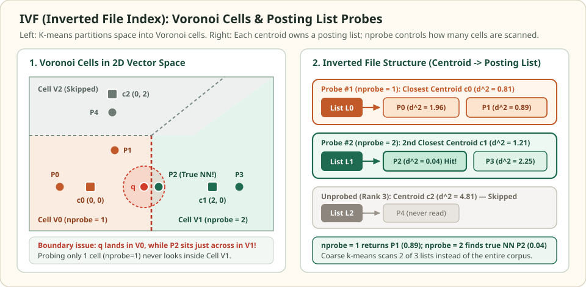

IVF: partition into Voronoi cells and probe the nearest lists
An Inverted File Index (IVF, such as Faiss's IndexIVFFlat) avoids scanning the entire corpus by clustering vectors around coarse centroids during training. Each centroid owns a posting list of the vectors nearest to it. At query time, the index scores the coarse centroids first and scans only the posting lists of the top nprobe centroids.
Unlike compressed indexes, IndexIVFFlat computes exact distances on every vector inside the probed lists. Its only source of error is candidate omission: when a true nearest neighbor belongs to a centroid outside the top nprobe, the index never looks inside that posting list.
Why the nearest centroid can hide the nearest vector
Three centroids · five vectors · one Voronoi bisector
Coarse centroids sit at $c_0=(0,0)$, $c_1=(2,0)$, and $c_2=(0,2)$. The bisector between $c_0$ and $c_1$ is the vertical line $x_1=1.0$. Query $q=(0.9,0.0)$ sits inside cell $c_0$, while its true nearest neighbor $P_2=(1.1,0.0)$ sits just across the boundary inside cell $c_1$.


nprobe = 1, the query inspects only list $L_0 = \{P_0, P_1\}$ and returns $P_1$ ($d^2 = 0.89$). Raising nprobe to $2$ crosses the bisector $x_1 = 1.0$ into list $L_1$ and recovers $P_2$ ($d^2 = 0.04$).During indexing, each vector $x_i$ is assigned to its closest coarse centroid $q_c(x_i)=\arg\min_{m} d(x_i,c_m)$. Specifically, $P_2=(1.1,0.0)$ has squared distance $0.81$ to $c_1=(2,0)$ and $1.21$ to $c_0=(0,0)$, so $P_2$ is placed in posting list $L_1$.
Fixed query q = (0.9, 0.0). Coarse centroid distances are d2(q, c0) = 0.81, d2(q, c1) = 1.21, d2(q, c2) = 4.81.
| Vector ID and coordinates | Assigned cell | Squared L2 to cell centroid | Squared L2 to query q | Scanned at nprobe=1? |
|---|---|---|---|---|
| P0 = (-0.5, 0.0) | c0 = (0, 0) | 0.25 | 1.96 | Yes |
| P1 = (0.4, 0.8) | c0 = (0, 0) | 0.80 | 0.89 | Yes |
| P2 = (1.1, 0.0) | c1 = (2, 0) | 0.81 | 0.04 | No |
| P3 = (2.4, 0.0) | c1 = (2, 0) | 0.16 | 2.25 | No |
| P4 = (0.0, 1.8) | c2 = (0, 2) | 0.04 | 4.05 | No |
Scroll horizontally to compare the columns. Keyboard: focus the table, then use the left and right arrow keys.
With nprobe = 1, the query inspects only its own Voronoi cell $L_0=\{P_0,P_1\}$ and returns $P_1$ at squared distance $0.89$. Increasing nprobe to $2$ probes both $L_0$ and $L_1$, uncovering $P_2$ at squared distance $0.04$.
Voronoi cells and the multi-probe tradeoff
Given $K_{\text{list}}$ centroids $\{c_0,\dots,c_{K_{\text{list}}-1}\}$ in $\mathbb{R}^d$, the Euclidean Voronoi cell of $c_m$ is the intersection of half-spaces:
In high dimensions, most of the volume of a convex polytope concentrates near its boundary facets rather than near its center. Consequently, queries routinely land near one or more cell bisectors, making single-cell lookup (nprobe = 1) prone to boundary misses unless several neighboring cells are probed.
| Parameter | Role | Effect of increasing it |
|---|---|---|
| nlist ($K_{\text{list}}$) | Number of coarse k-means centroids and posting lists | More coarse centroid comparisons, smaller average posting lists, and more cell boundaries |
| nprobe ($P$) | Number of nearest posting lists scanned per query | Higher recall across cell boundaries and linearly more list-scanning work |
Account for coarse scoring and posting-list imbalance
If all $K_{\text{list}}$ posting lists had equal length $N / K_{\text{list}}$, a query with coarse quantizer cost $K_{\text{list}}d$ and $P = \text{nprobe}$ probed lists would evaluate:
Minimizing this ideal count for a fixed probe fraction $P/K_{\text{list}} = \alpha$ suggests choosing $K_{\text{list}}$ on the order of $\sqrt{N}$ (for instance, $1{,}024$ to $4{,}096$ centroids for a million vectors), or replacing the flat coarse quantizer with an HNSW graph over the centroids (IndexIVF with an HNSW coarse quantizer in Faiss).
Real embedding corpora rarely split into equal-sized clusters. Jégou and colleagues define the imbalance factor $\hat{\beta} \ge 1$ of the inverted lists as:
When $|L_m| = N/K_{\text{list}}$ for every cell, $\hat{\beta} = 1$. If a dense topic cluster captures $10\%$ of a million-document corpus inside a single list, any query probing that list scans $100{,}000$ vectors regardless of the average list size, inflating p95 and p99 latency.
Residual vectors shift each cell to a local origin
Instead of storing raw coordinates $x \in L_m$, an IVF index can represent each point by its displacement from its assigned coarse centroid:
In IndexIVFFlat, storing $x$ or $r(x)$ yields identical exact distances. The residual representation becomes decisive when IVF is combined with Product Quantization (IndexIVFPQ): because $r(x)$ has much smaller norm and variance than $x$, quantizing the residual uses the limited codebook bits to resolve fine local offsets inside cell $m$ rather than wasting bits encoding which coarse region of $\mathbb{R}^d$ the point came from.
import numpy as np
q = np.array([0.9, 0.0])
centroids = {
0: np.array([0.0, 0.0]),
1: np.array([2.0, 0.0]),
2: np.array([0.0, 2.0]),
}
points = {
"P0": np.array([-0.5, 0.0]),
"P1": np.array([0.4, 0.8]),
"P2": np.array([1.1, 0.0]),
"P3": np.array([2.4, 0.0]),
"P4": np.array([0.0, 1.8]),
}
def sq_l2(u, v):
diff = u - v
return float(np.dot(diff, diff))
# Build inverted lists by nearest centroid
lists = {m: [] for m in centroids}
residuals = {}
for pid, x in points.items():
best_m = min(centroids, key=lambda m: sq_l2(x, centroids[m]))
lists[best_m].append(pid)
residuals[pid] = x - centroids[best_m]
assert lists == {0: ["P0", "P1"], 1: ["P2", "P3"], 2: ["P4"]}
def ivf_search(query, nprobe):
ordered_cells = sorted(centroids, key=lambda m: sq_l2(query, centroids[m]))
scored = []
for m in ordered_cells[:nprobe]:
q_res = query - centroids[m]
for pid in lists[m]:
scored.append((round(sq_l2(q_res, residuals[pid]), 4), pid))
scored.sort()
return scored[0]
assert ivf_search(q, nprobe=1) == (0.89, "P1")
assert ivf_search(q, nprobe=2) == (0.04, "P2")
N = len(points)
imbalance = len(centroids) * sum((len(lst) / N) ** 2 for lst in lists.values())
assert round(imbalance, 4) == 1.08
print("nprobe=1:", ivf_search(q, nprobe=1))
print("nprobe=2:", ivf_search(q, nprobe=2))
print("Imbalance factor:", round(imbalance, 4))Training drift, updates, and metadata filtering in RAG
Unlike HNSW, an IVF index requires a training pass on a representative vector sample to fit the coarse centroids before vectors are added. If an application ingests new domains whose embeddings sit far from the original training distribution, new vectors pile into a few outer Voronoi cells, raising $\hat{\beta}$ and degrading both latency and recall until the coarse quantizer is retrained.
On the other hand, appending or deleting vectors in IndexIVFFlat only modifies flat posting-list arrays without repairing multi-layer graph edges, and metadata predicates can skip ineligible posting-list entries directly during the sequential list scan—provided the eligible items are present in the probed cells.
Check the operating assumptions
Can IndexIVFFlat change the relative order of two vectors that live in the same probed posting list?
No, up to floating-point tie conventions. Inside every probed list, IndexIVFFlat computes uncompressed distances. An error occurs only when a true top-K neighbor sits in an unprobed list.
Why does setting nlist = N fail to speed up search?
Selecting which lists to probe requires scoring the query against all nlist coarse centroids. If nlist equals N, the coarse quantizer alone performs N full-dimensional distance evaluations, matching an exhaustive flat scan before any posting list is read.
If a tenant filter matches only vectors inside cell c1, what happens when nprobe=1 selects only cell c0?
The query returns zero results even when filtered inside the posting list scan, because cell c1 was never probed. When a filter correlates with vector location or is highly selective, the query plan must either probe more cells or intersect the inverted list directly with the tenant index.
Sources
- Jégou, Douze, and Schmid: Product Quantization for Nearest Neighbor Search, IEEE TPAMI 2011 (IVF, residual vectors, and the list imbalance factor).
- Faiss Indexes Wiki,
IndexIVFFlatand coarse quantizer options. - Faiss: Faster Search, choosing
nlistandnprobe.